Nadiah Kristensen & Nicholas Buttle
School of Mathematical Sciences
Faculty of Science
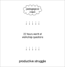
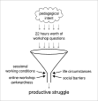
The Room (Fireproof Games)
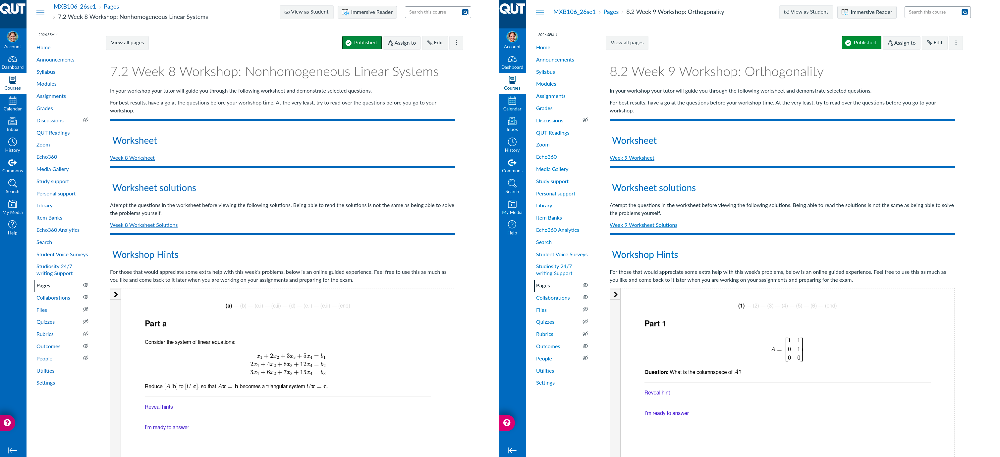
Interactive worksheets embedded in Canvas
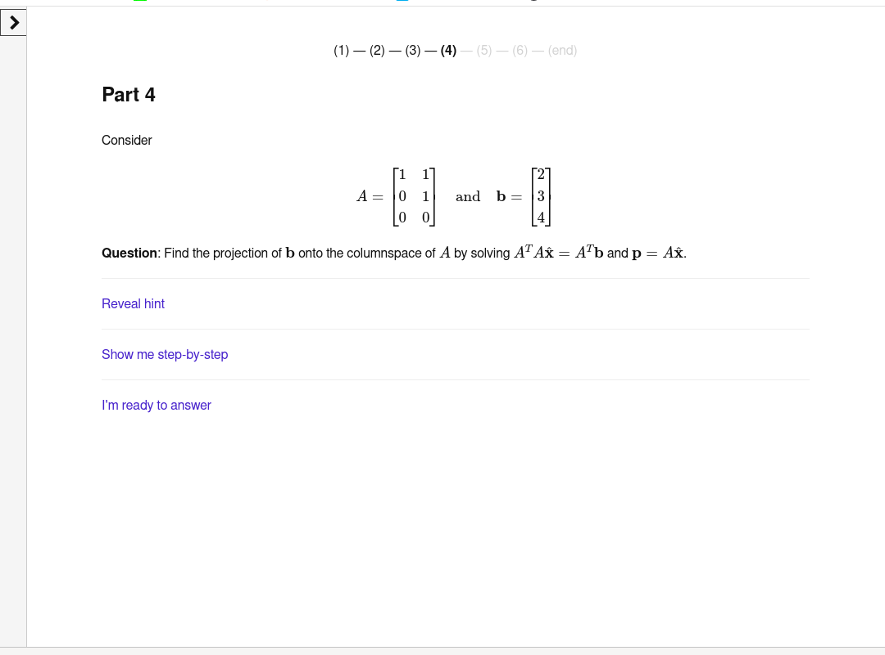
Not H5P
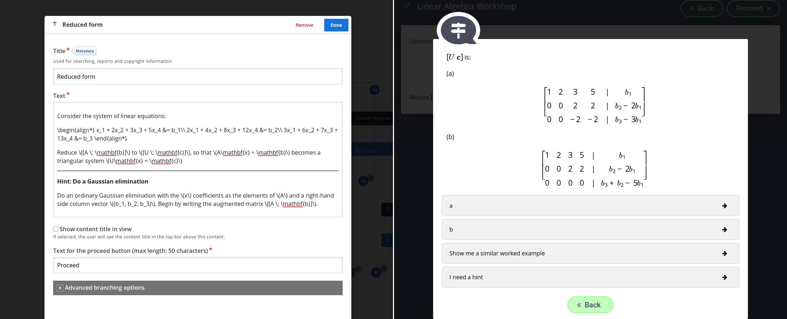
Twee
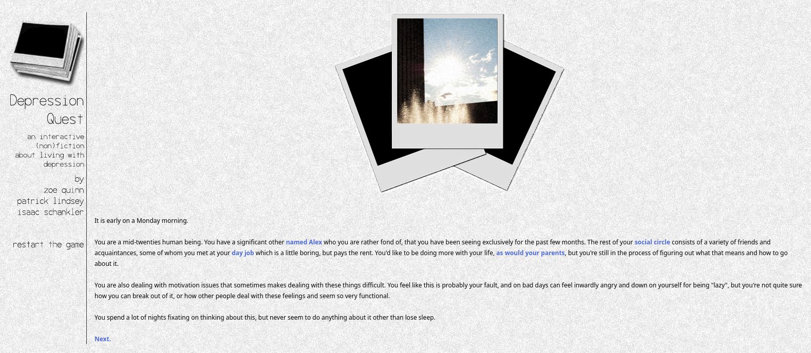
Socio-politically significant example from 2013
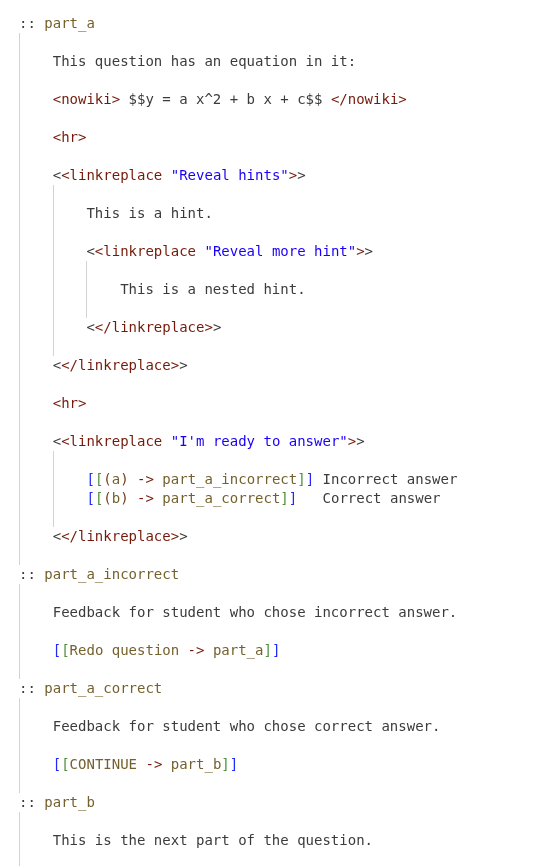
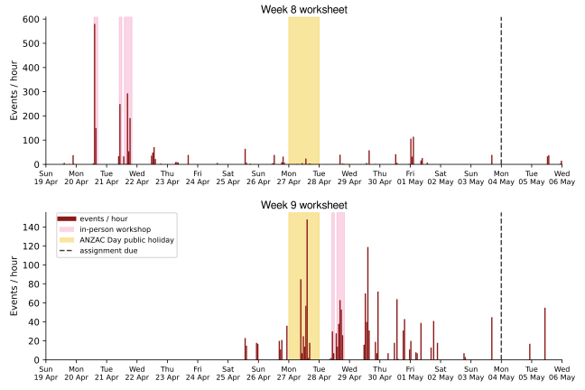
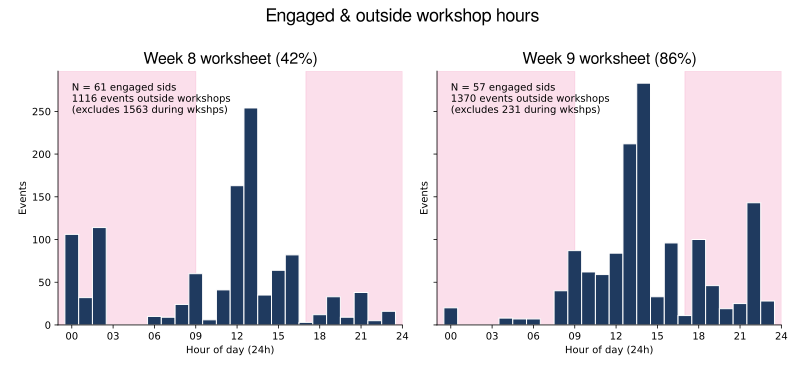
Counting only students who…
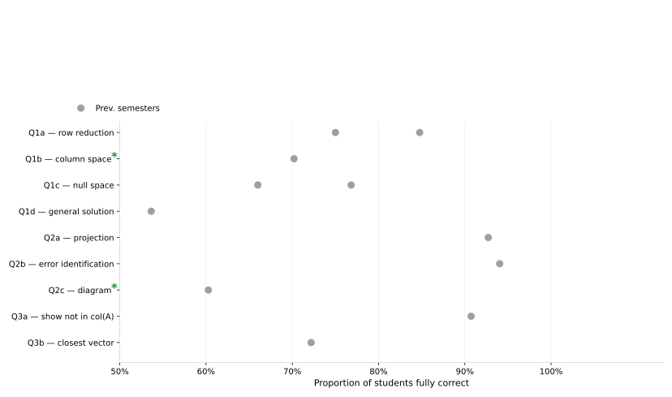
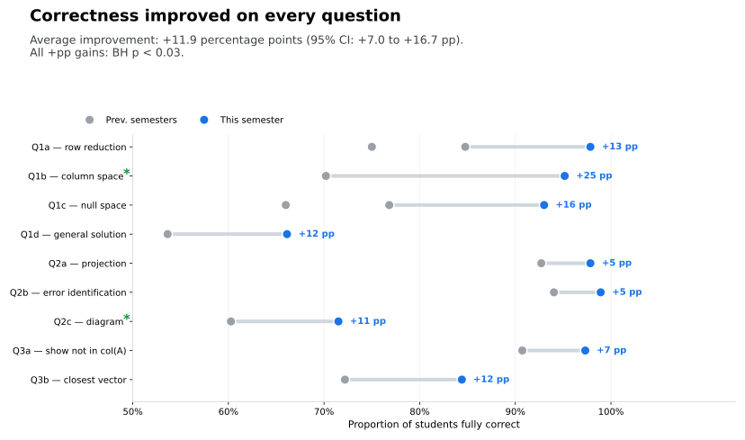
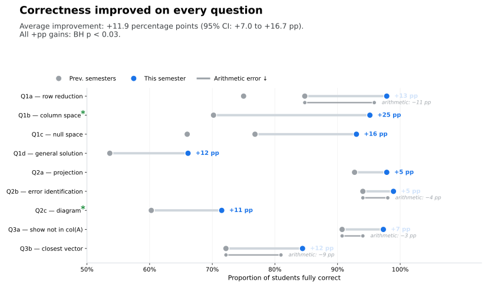
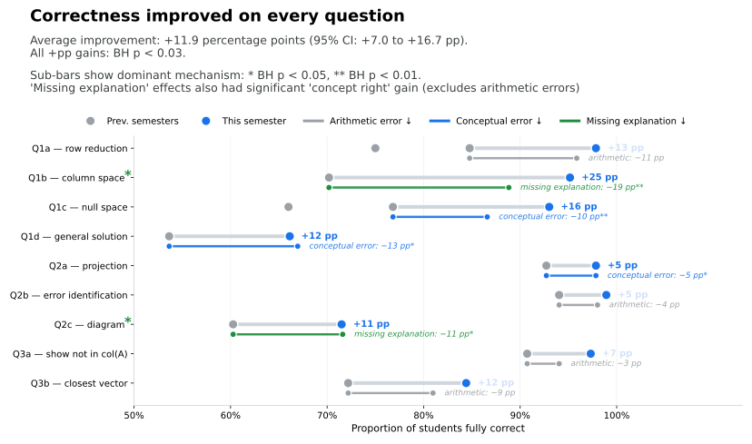
“I was just emailing you to let you know that I have found the workshop hints to be super informative, intuitive and helpful. It would be awesome if the teaching staff could produce them on a weekly basis.”
Truth: We have some excellent workshop questions!
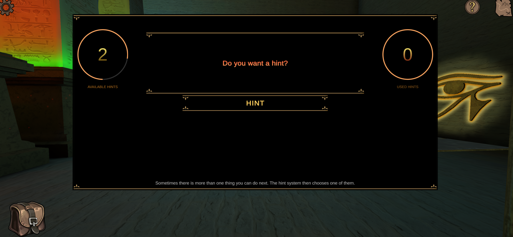
Legacy - The Lost Pyramid (David Adrian)